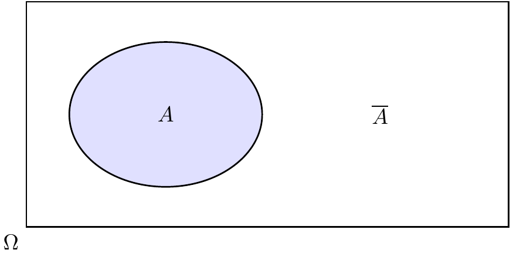
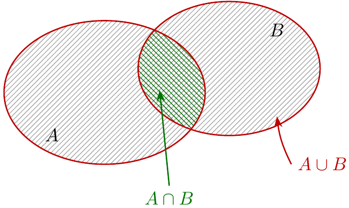

Chapitre 11 : Probabilités
Seconde · Chapitre 11 — Probabilités · cours de Frederik de Peyrelongue
I. Expérience aléatoire
On prend cinq jetons avec les lettres P, R, O, B, A. On tire les lettres une par une pour écrire un mot de 5 lettres.
- Sait-on avec certitude quelle sera la position de la lettre A ?
- Sait-on avec certitude combien de consonnes seront contenues dans le mot ?
- Y a-t-il une différence entre les deux expériences ?
Une expérience aléatoire est une expérience comportant plusieurs résultats et dont tous les résultats possibles sont connus, mais dont on ne peut pas prédire le résultat définitif avec certitude.
On lance un dé à 6 faces non truqué et on regarde le numéro obtenu sur la face du dessus. On sait que l'on peut obtenir exactement six résultats possibles, mais on ne sait pas lequel exactement tombera.
1.1 Vocabulaire
L'univers d'une expérience aléatoire est l'ensemble de toutes ses issues. On le note $\Om$.
Pour le lancer de dé, les issues sont $1$, $2$, $3$, $4$, $5$ et $6$. L'univers associé à cette expérience aléatoire est :
Un événement est un sous-ensemble (une partie) de l'univers. Il peut toujours se décrire à l'aide d'issues.
Pour l'expérience du dé, on peut prendre comme événement $A$ = « Obtenir un chiffre impair ». Les issues qui réalisent cet événement sont $1$, $3$ et $5$.
On écrit donc : $A=\{1\,;3\,;5\}$.
Un événement élémentaire est un événement formé d'un seul élément.
L'événement $B$ = « Obtenir 6 » est un événement élémentaire. On écrit : $B=\{6\}$.
L'événement contraire de l'événement $A$ est noté $\overline{A}$. Il s'agit de l'événement qui contient tous les éléments de l'univers $\Om$ qui ne sont pas dans $A$ (c'est-à-dire toutes les issues qui ne réalisent pas $A$).

L'événement $\overline{A}$, contraire de l'événement $A$ = « Obtenir un chiffre impair », est l'événement « Obtenir un chiffre pair ». On a : $\overline{A}=\{2\,;4\,;6\}$.
Soit $C=\{1\,;6\}$ : on a alors $\overline{C}=\{2\,;3\,;4\,;5\}$.
Un événement impossible est un événement qui ne peut pas se produire. On le note $\varnothing$ (on lit « ensemble vide »).
L'événement $D$ = « Obtenir 7 » est impossible. On note : $D=\varnothing$.
1.2 Union et intersection d'ensembles
Soient $A$ et $B$ deux ensembles. On note $A\cup B$ (lire « $A$ union $B$ ») l'événement dont les éléments sont dans l'ensemble $A$ ou dans l'ensemble $B$.
- On considère les événements $A=\{1\,;3\,;5\}$ et $B=\{6\}$. On a : $A\cup B=\{1\,;3\,;5\,;6\}$.
- On considère les événements $C=\{1\,;6\}$ et $A=\{2\,;4\,;6\}$. On a : $A\cup C=\{1\,;2\,;4\,;6\}$.
Soient $A$ et $B$ deux ensembles. On note $A\cap B$ (lire « $A$ inter $B$ ») l'événement dont les éléments sont dans l'ensemble $A$ et dans l'ensemble $B$.

- On considère les événements $A=\{1\,;3\,;5\}$ et $E=\{3\,;4\,;5\}$. On a : $A\cap E=\{3\,;5\}$.
- On considère les événements $A=\{1\,;3\,;5\}$ et $B=\{6\}$. On a : $A\cap B=\varnothing$. On parle dans ce cas d'événements incompatibles (ou d'ensembles disjoints).
II. Probabilités
On considère une expérience aléatoire dont les issues sont notées $e_{1}\,;e_{2}\,;e_{3}\,;\dots\,;e_{p}$. On répète cette expérience $n$ fois.
- Si une issue se réalise $k$ fois au cours des $n$ expériences, sa fréquence est égale à $\dfrac{k}{n}$.
- Une fréquence est toujours comprise entre $0$ et $1$.
- La somme des fréquences de toutes les issues est égale à $1$.
- Si on répète un grand nombre de fois l'expérience dans les mêmes conditions, alors la fréquence de chaque issue se stabilise autour d'une valeur $p$ appelée la probabilité de cette issue.
Soit $\Om=\{e_{1}\,;e_{2}\,;e_{3}\,;\dots\,;e_{n}\}$ l'univers d'une expérience aléatoire, où chaque $e_{i}$ représente une issue. À chaque issue $e_{i}$, on associe sa probabilité $p_{i}$, qui est un nombre ayant les propriétés suivantes :
- pour tout entier $i$ tel que $1\leqslant i\leqslant n$, $0\leqslant p_{i}\leqslant 1$ ;
- $p_{1}+p_{2}+p_{3}+\dots+p_{n}=1$.
Une loi de probabilité est définie en associant à chaque issue une probabilité. Modéliser une expérience aléatoire, c'est faire le choix d'une loi de probabilité.
On lance un dé cubique numéroté de $1$ à $6$. On a : $\Om=\{1\,;2\,;3\,;4\,;5\,;6\}$.
La loi de probabilité de cette expérience est, pour tout entier $i$ : $p_{i}=\dfrac{1}{6}$.
| issue | $1$ | $2$ | $3$ | $4$ | $5$ | $6$ |
| probabilité | $\dfrac{1}{6}$ | $\dfrac{1}{6}$ | $\dfrac{1}{6}$ | $\dfrac{1}{6}$ | $\dfrac{1}{6}$ | $\dfrac{1}{6}$ |
La probabilité d'un événement $A$, notée $\prob(A)$, est la somme des probabilités de toutes les issues qui réalisent l'événement $A$.
Si l'événement $A=\{e_{1}\,;e_{2}\,;e_{3}\}$, alors
On considère l'événement $A=\{1\,;3\,;5\}$. La probabilité de $A$ est :
On dit qu'on est en situation d'équiprobabilité sur un univers $\Om$ si toutes les issues ont la même probabilité.
Dans le cas d'équiprobabilité, la probabilité d'un événement $A$ est :
Un lancer de dé équilibré est une situation d'équiprobabilité : toutes les issues ont une probabilité de $\dfrac{1}{6}$.
L'univers $\Om=\{1\,;2\,;3\,;4\,;5\,;6\}$ possède $6$ éléments. L'événement $C=\{1\,;6\}$ possède $2$ éléments, donc la probabilité de $C$ est :
III. Propriétés de probabilité
Activité : considérons, lors d'un lancer de dé équilibré à six faces, les événements suivants : $A=\{1\,;2\,;3\}$, $B=\{3\,;4\}$ et $C=\{4\}$.
- Déterminer les probabilités des trois événements.
- Déterminer les événements $A\cap B$, $A\cup B$, $A\cap C$, $A\cup C$, $B\cap C$ et $B\cup C$.
- Calculer les probabilités des événements ci-dessus.
Établir une relation entre :
- $\prob(A)$, $\prob(B)$, $\prob(A\cap B)$ et $\prob(A\cup B)$ ;
- $\prob(A)$, $\prob(C)$, $\prob(A\cap C)$ et $\prob(A\cup C)$ ;
- $\prob(B)$ et $\prob\left(\overline{B}\right)$ ;
- $\prob(C)$ et $\prob\left(\overline{C}\right)$.
Soient $A$ et $B$ deux événements.
Si les événements sont incompatibles (c'est-à-dire si les ensembles $A$ et $B$ sont disjoints), alors
\[ \prob(A\cup B)=\prob(A)+\prob(B) . \]Si les événements ne sont pas incompatibles, alors
\[ \prob(A\cup B)=\prob(A)+\prob(B)-\prob(A\cap B) . \]L'événement contraire de $A$ a pour probabilité :
\[ \prob\left(\overline{A}\right)=1-\prob(A) . \]
$20$ amis sont regroupés autour de trois galettes (frangipane, pomme et chocolat) pour tirer les rois. La galette à la frangipane contient $2$ fèves ; elle est coupée en $10$ parts (aucune ne contenant les deux fèves). La galette à la pomme contient $1$ fève ; elle est coupée en $6$ parts. La galette au chocolat, plus petite, contient $1$ fève ; elle est coupée en $4$ parts.
Complétez le tableau suivant donnant la répartition des parts suivant la présence d'une fève ou non et le type de galette.
Frangipane Pomme Chocolat Total Avec fève Sans fève Total On note $R$ « la personne a une fève », $F$ « sa part est à la frangipane » et $P$ « sa part est à la pomme ».
- Calculer la probabilité de chacun des événements $R$, $F$ et $P$.
- Calculer la probabilité que la part de la personne ne soit pas à la pomme.
- Calculer la probabilité que la part de la personne soit à la frangipane et avec une fève.
- Calculer la probabilité que la part de la personne soit à la frangipane ou avec une fève.
- Calculer la probabilité que la part soit à la pomme ou à la frangipane.